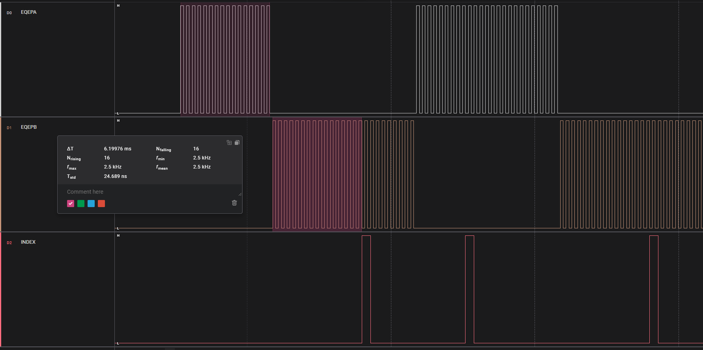

Introduction
This example demonstrates the use of eQEP (Enhanced Quadrature Encoder Pulse) module to measure position, direction, frequency and speed from CW/CCW input pulses. The example emulates encoder signals using GPIO outputs and timer-based interrupts.

EQEP CW/CCW Input pulses, Index Pulse visible at count 0
Example Description
The example configures:
- Two GPIO outputs to generate CW and CCW pulses that emulate encoder signals
- A third GPIO output to generate index pulses
- eQEP module in QMA Mode 2 (Active Pulse High)
- Timer-based interrupts to generate the pulses
- Unit timeout period of 10ms for speed measurement
The example demonstrates:
- Position counting in both CW and CCW directions
- Direction detection
- Frequency measurement
- Speed calculation in RPM
- QMA error detection
Configuration Details
- Encoder resolution: 1000 counts/revolution
- Pulse pattern: Direction changes everytime eqep ISR is triggered
- Pulse frequency: 2.5kHz (150 RPM)
- Index pulse generated using simulated count at pos=0
- Unit timeout period: 10ms
External Connections
The following GPIO pins can be monitored with an oscilloscope to view the generated encoder signals:
AM263x-CC, AM263Px-CC
- GPIO43/Hsec 49: eQEP Phase A signal
- GPIO44/Hsec 51: eQEP Phase B signal
- GPIO48/Hsec 52: eQEP Index Signal
AM263x-LP, AM263Px-LP
- GPIO43/J2.11: eQEP Phase A signal
- GPIO44/J6.59: eQEP Phase B signal
- GPIO48/J4.40: eQEP Index Signal
Watch Variables
The following variables can be monitored by pausing the program to observe the eQEP measurements:
- gEncoderState: Global structure for all calculations
Supported Combinations
| Parameter | Value |
| CPU + OS | r5fss0-0 nortos |
| Toolchain | ti-arm-clang |
| Board | am263x-cc, am263x-lp |
| Example folder | examples/drivers/eqep/eqep_cw_ccw |
Steps to Run the Example
- Import and build the project for your target configuration
- Connect an oscilloscope to monitor the GPIO outputs if desired
- Load and run the program
- Monitor the watch variables to observe:
- Position counting
- Direction changes
- Speed measurement
- QMA error detection
Sample Output
The example will display position, direction, frequency and speed measurements via UART:
EQEP Position Speed Test Started ...
EQEP Validation Passed
Results:
Frequency: 2500 Hz
Speed: 150.00 RPM
Direction: Counter-clockwise
All tests passed successfully!
See Also
 1.8.20
1.8.20